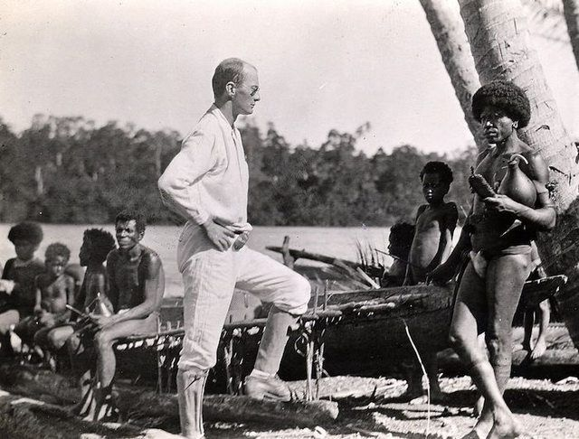
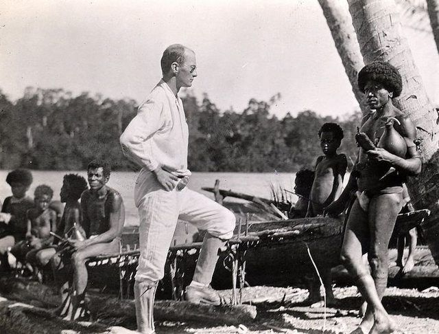

I’m interested in the topic of cultural representation and understanding of sex.
I’m interested in the culture-rooted perspectives and reasons for which they shaped the way we perceive sex.
Sexuality never stops being controversial. Some aspects are overly exposed in media and culture, while others keep being taboo'ed, connected with guilt, embarassment and shaming.I wonder where these emotions come from and whether they are culture or nature based. My hypothesis is that the way the sex is being approached is a cultural outcome of different political, religious, cultural influences from the history.
Sex is part of our very intimate personal nature and psychology, yet we reach for ready made answers from culture to help us understand it and shape it to meet certain model, while the picture we get from culture is quite distorted. Or maybe it is completely right? I wonder what it does say about us as Western society.
I would like to explore how the phenomenon of sex is approached in different cultures and what effort is being made to manipulate the image of it. Further on I want to speculate on how it COULD be presented if we imagined dismissing the culturaly rooted tropes. I’m planning to read and watch academic materials about sexuality and gender psychology to understand the topic a bit and analyse the visual quality and representation in media and eventually come up with alternative scenarios.
The work starts with the word "sex" in its title. The three letters provoke a certain rush of blood to the head. From there on, at the imaginary readers' table we can observe a range of diverse reactions - some positive, others annoyed, unfavourable. For some, mentioning the three letter word wakes up a nerver of inner anxiety. The audience lets itself to consider the author as a sexual being. The variety of reactions depends on the number of factors (e.g. age, origin, gender, religion, personality, sexual satisfaction levels, traumas, education, way of upringing etc.). A similar phenomenon occurs when the three letter combination appears in a set, surrounded by other letters, unintentionally (e.g. Middlesex, sexennial, sexton, sextuple, sextette etc.). For some reason 'sex' has a larger responsive impact than other words that have also appeared in the foregoing text, like 'table', or 'blood'. The intention of this thesis isn't to say that it's a bad thing.
What is the intention of this thesis?
Well, let me tell you about the Trobriant islanders from North-Western Melanesia.

Trobriant islands belong to Papua New Guinea and have been inhabited by indigenous people. In Trobriant society it is a taboo to eat in front of other people. The islanders consume their meals alone, shunning from the eye of others. But the activity they are more comfortable about is sex. Both male and female inhabitants are free to have as much sexual intercourse and partners as they want before and during being married.
There is no festive wedding ceremony. A couple of lovers stay for the night together. If the girl doesn't come home before the sunrise, the mother brings cooked yams to the lovers in the morning. The couple eats next to each other. At this point the marriage is established. From there on, they eat together for one year, after which they go back to eating separately.
Reading the research of Bronisław Malinowski from 1929 brings up a feeling that in perception of Trobriants, eating has a similar emotional implications/connotations as for us does sex and vice versa. For the islanders, eating is a private, intimate element of life, only shared with a spouse. Sex on the other hand is a common activity, not held under a certain taboo, shame social disgrace, not limited to monogamy etc.
 I find it truly fascinating how sex for them is just a 'thing'. What is it that made sex so problematic then in our world? Sociology and sexuology give the answer that is not truly our nature to be so problematic and oppressive on the topic of sex, it is rather the history and culture that through centuries have shaped our traumas, discomforts and fears, regulations, gender norms, denials of different orientations, morals, guilt which we started assigning to particular parts of our bodies.
I find it truly fascinating how sex for them is just a 'thing'. What is it that made sex so problematic then in our world? Sociology and sexuology give the answer that is not truly our nature to be so problematic and oppressive on the topic of sex, it is rather the history and culture that through centuries have shaped our traumas, discomforts and fears, regulations, gender norms, denials of different orientations, morals, guilt which we started assigning to particular parts of our bodies.
The intention of this thesis is to wonder. Why and how did we get to the point where we understand and represent sex the way we do? Could it have gone another way? Why do we search for answers to the understanding of our bodies from/in the culture? What does the culture think about sex? Does the culture like it?
The work starts with the word "sex" in its title. The three letters provoke a certain rush of blood to the head. From there on, at the imaginary readers' table we can observe a range of diverse reactions - some positive, others annoyed, unfavourable. For some, mentioning the three letter word wakes up a nerver of inner anxiety. The audience lets itself to consider the author as a sexual being. The variety of reactions depends on the number of factors (e.g. age, origin, gender, religion, personality, sexual satisfaction levels, traumas, education, way of upringing etc.). A similar phenomenon occurs when the three letter combination appears in a set, surrounded by other letters, unintentionally (e.g. Middlesex, sexennial, sexton, sextuple, sextette etc.). For some reason 'sex' has a larger responsive impact than other words that have also appeared in the foregoing text, like 'table', or 'blood'. The intention of this thesis isn't to say that it's a bad thing.
What is the intention of this thesis?
Well, let me tell you about the Trobriant islanders from North-Western Melanesia.

Trobriant islands belong to Papua New Guinea and have been inhabited by indigenous people. In Trobriant society it is a taboo to eat in front of other people. The islanders consume their meals alone, shunning from the eye of others. But the activity they are more comfortable about is sex. Both male and female inhabitants are free to have as much sexual intercourse and partners as they want before and during being married.
There is no festive wedding ceremony. A couple of lovers stay for the night together. If the girl doesn't come home before the sunrise, the mother brings cooked yams to the lovers in the morning. The couple eats next to each other. At this point the marriage is established. From there on, they eat together for one year, after which they go back to eating separately.
Reading the research of Bronisław Malinowski from 1929 brings up a feeling that in perception of Trobriants, eating has a similar emotional implications/connotations as for us does sex and vice versa. For the islanders, eating is a private, intimate element of life, only shared with a spouse. Sex on the other hand is a common activity, not held under a certain taboo, shame social disgrace, not limited to monogamy etc.
I find it truly fascinating how sex for them is just a 'thing'. What is it that made sex so problematic then in our world? Sociology and sexuology give the answer that is not truly our nature to be so problematic and oppressive on the topic of sex, it is rather the history and culture that through centuries have shaped our traumas, discomforts and fears, regulations, gender norms, denials of different orientations, morals, guilt which we started assigning to particular parts of our bodies.
The intention of this thesis is to wonder. Why and how did we get to the point where we understand and represent sex the way we do? Could it have gone another way? Why do we search for answers to the understanding of our bodies from/in the culture? What does the culture think about sex? Does the culture like it?